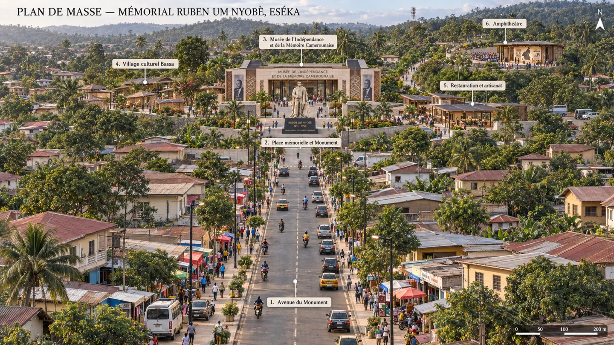
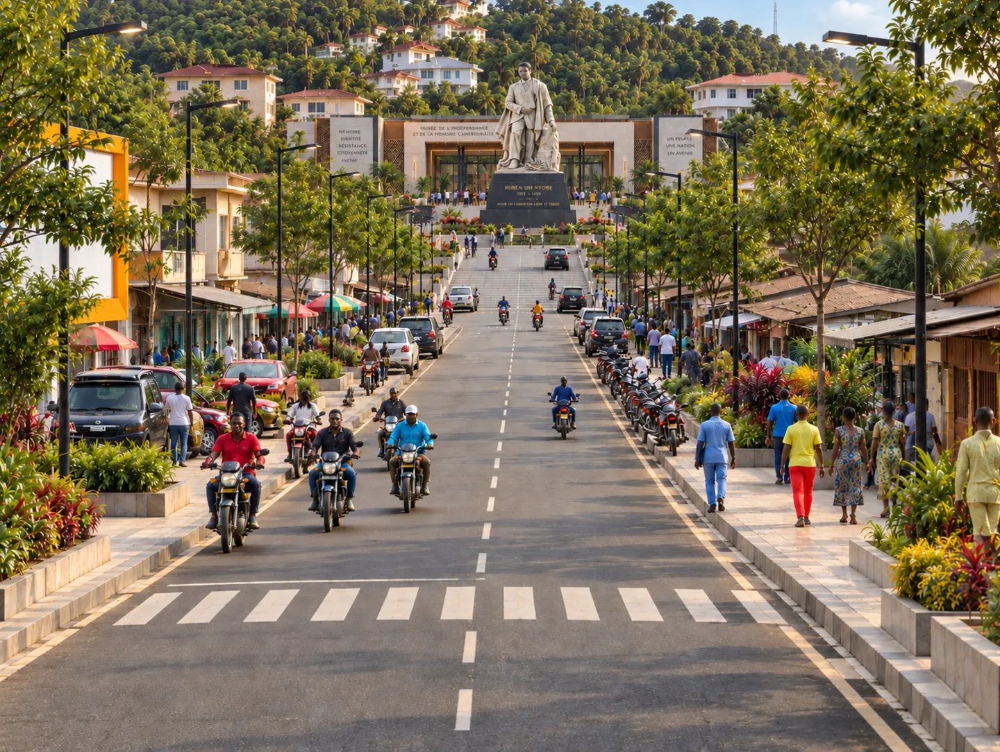
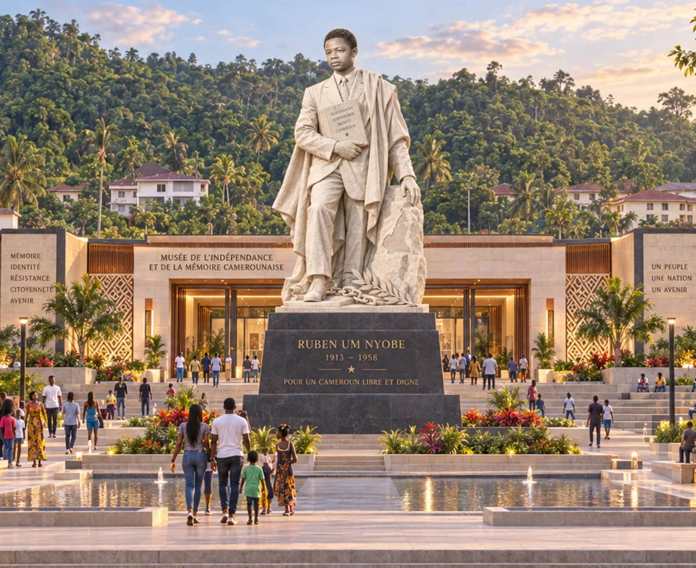
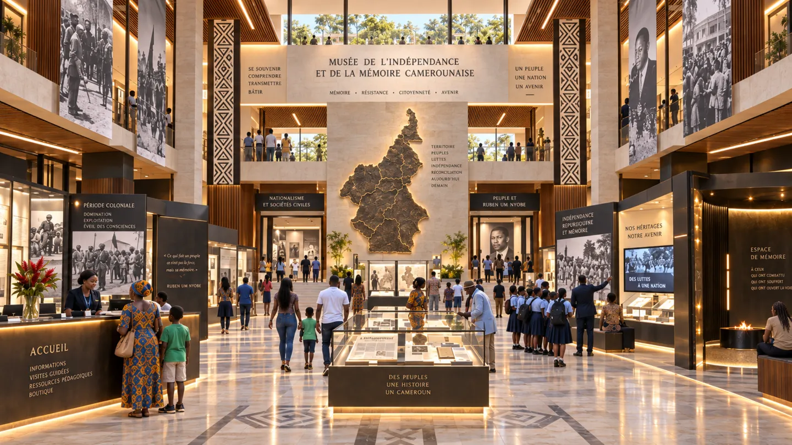
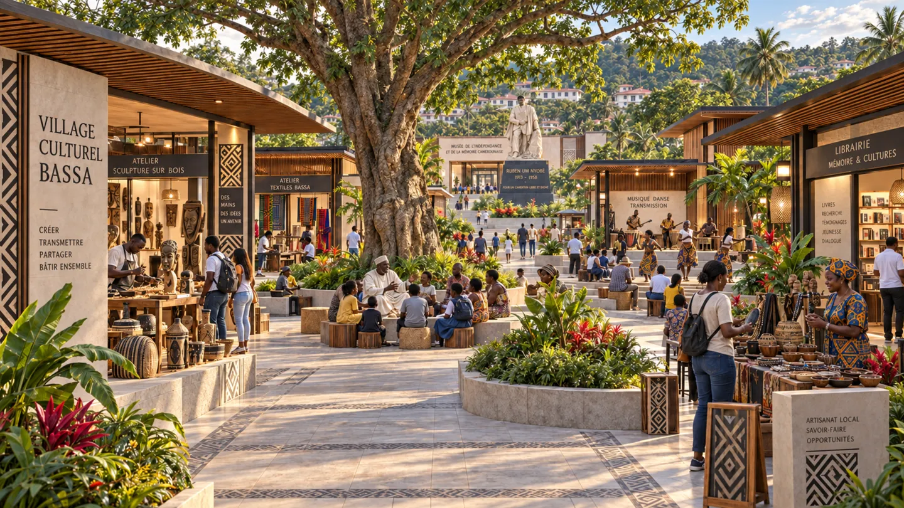
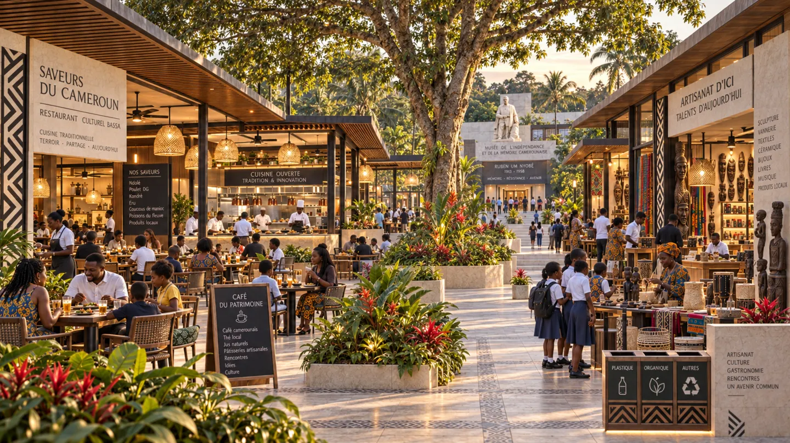
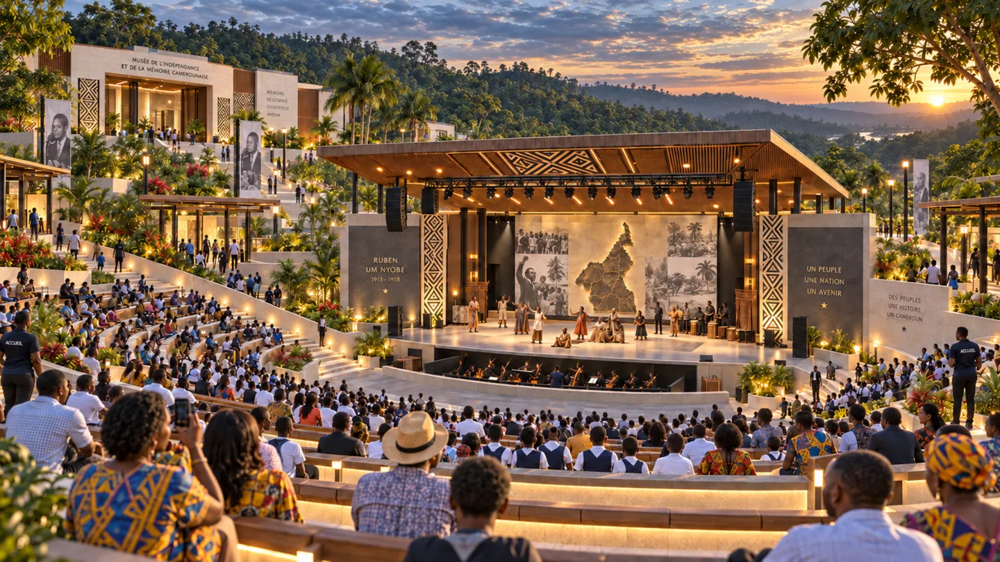

Mémorial Ruben Um Nyobè à Eséka
Un complexe mémoriel, culturel, touristique et urbain au terme de l’avenue d’Eséka — dossier de cadrage stratégique, architectural, économique et opérationnel.

Perspective d’intention produite pour l’avant-projet. Les sept vues du dossier expriment une intention architecturale et ne remplacent pas des plans d’exécution.
Le monument donne la visibilité nationale. Le musée donne la profondeur scientifique. L’avenue, elle, décide de ce que la ville recevra vraiment.
- TERRITOIRE
- Eséka et le département du Nyong-et-Kéllé
- ÉCHELLE
- Avenue urbaine requalifiée et complexe culturel au terme de l’axe
- HORIZON INDICATIF
- 2027 à 2032, en quatre phases conditionnelles
- INVESTISSEMENT CENTRAL
- 14,45 milliards FCFA en valeur indicative 2026
- FINALITÉ
- Faire de la mémoire un levier durable de développement urbain et local
Le projet propose de faire du Mémorial Ruben Um Nyobè le point d’aboutissement d’une transformation urbaine, culturelle et économique d’Eséka. Le monument, le Musée de l’Indépendance et de la Mémoire Camerounaise, le village culturel Bassa, l’amphithéâtre et l’offre de restauration et d’artisanat forment une destination cohérente. L’avenue principale conserve sa morphologie urbaine réelle et devient le lien entre la vie quotidienne de la ville et le cœur mémoriel.
La décision structurante consiste à réaliser le projet par étapes, avec une première ouverture visible et exploitable. La phase initiale doit améliorer l’avenue, sécuriser le foncier du complexe, construire le monument et organiser l’accueil. Le musée complet et les autres équipements ne sont engagés que lorsque leur financement, leur contenu scientifique et leur modèle d’exploitation sont validés.
Vision et contribution au développement d’Eséka
Une destination construite autour de la ville
Le projet ne doit pas être conçu comme une enceinte isolée. L’avenue principale demeure un espace de circulation, de commerce et de rencontre. Sa requalification améliore l’accès au complexe sans effacer les activités existantes. Le monument et le musée occupent le terme de la perspective, tandis que les équipements culturels et marchands utilisent les emprises disponibles autour du site supérieur.
Cette organisation permet de répartir les retombées. Les visiteurs traversent la ville, utilisent ses transports, consomment dans ses commerces et identifient Eséka comme destination. Les investissements dans le drainage, les trottoirs, l’éclairage et la signalétique bénéficient aussi aux habitants qui n’entrent jamais dans le complexe.
INVESTISSEMENT
- Monument
- Musée
- Avenue et espaces publics
ACTIVITÉS
- Visites
- Éducation
- Événements et commerce
EFFETS LOCAUX
- Emplois
- Revenus des entreprises
- Image urbaine
RÉSULTATS
- Destination nationale
- Mémoire transmise
- Économie diversifiée
Objectifs mesurables
| Objectif | Résultat attendu à cinq ans | Indicateur principal |
|---|---|---|
| Mémoire | Un récit national documenté et accessible | Visiteurs, scolaires et fonds numérisés |
| Économie locale | Des revenus nouveaux pour les entreprises d’Eséka | Achats locaux, nuitées, ventes et concessions |
| Emploi | Des métiers durables liés à la culture et au tourisme | Emplois locaux et heures de formation |
| Ville | Une avenue plus sûre, plus propre et plus attractive | Éclairage, drainage, cheminements et occupation commerciale |
| Rayonnement | Une destination identifiée au Cameroun et dans la diaspora | Part des visiteurs venant hors du département |
Composition urbaine et programme des équipements
Un plan de masse adapté à la géographie de l’avenue

Le plan de masse respecte la structure linéaire de l’avenue. La chaussée reste à double sens, sans terre-plein central surdimensionné. Les constructions riveraines et la végétation encadrent l’approche. Le monument et le musée forment le repère terminal. Le village culturel et les activités commerciales occupent des parcelles latérales proches du musée, tandis que l’amphithéâtre s’insère dans la pente et dispose d’un accès technique distinct.
| Zone | Fonction | Principe d’implantation |
|---|---|---|
| Avenue du Monument | Accès, commerce, transport et promenade | Requalification légère et progressive du corridor existant |
| Place mémorielle | Cérémonies, contemplation et rassemblement | Parvis compact au terme de l’avenue |
| Musée | Expositions, archives, médiation et recherche | Bâtiment bas derrière la statue |
| Village culturel Bassa | Ateliers, transmission, musique et oralité | Pavillons paysagers sur les emprises latérales |
| Restauration et artisanat | Cuisine, café, vente et démonstration | Cour active reliée au musée mais exploitable séparément |
| Amphithéâtre | Spectacles, débats et grands événements | Insertion dans la pente avec accès de service périphérique |
L’avenue comme première expérience du projet

La requalification privilégie les besoins quotidiens. Elle combine réfection de la chaussée, drainage, trottoirs continus, traversées piétonnes, éclairage, plantations, organisation des motos-taxis et espaces de livraison. Les façades peuvent bénéficier d’un programme incitatif d’entretien et d’harmonisation, sans reconstruction générale ni éviction des commerces.
| Intervention | Bénéfice pour les habitants | Bénéfice touristique |
|---|---|---|
| Drainage et chaussée | Réduction des stagnations et meilleure circulation | Accès fiable en toute saison |
| Trottoirs et traversées | Sécurité des piétons et des scolaires | Parcours confortable vers le mémorial |
| Éclairage public | Activité prolongée et sécurité | Visites et restauration en soirée |
| Organisation commerciale | Meilleure visibilité des commerces | Offre locale lisible et attractive |
| Signalétique mémorielle | Appropriation de l’histoire locale | Mise en récit avant l’arrivée au musée |
Le monument et la place mémorielle

La statue constitue le repère majeur du projet. Son socle organise la lecture du nom, des dates et de la portée historique de Ruben Um Nyobè. Le parvis accueille les visiteurs ordinaires, les groupes scolaires et les cérémonies nationales. Les bassins, les jardins et les emmarchements doivent rester sobres afin de préserver la visibilité du monument et l’accès au musée.
La conception définitive du visage, des attributs et des inscriptions doit être approuvée par un conseil scientifique à partir d’un corpus documentaire. Les matériaux et la structure seront choisis après étude du climat, de la maintenance, de la sécurité et du coût de cycle de vie.
Le musée comme équipement national

Le musée relie l’histoire de Ruben Um Nyobè à celle du Cameroun. Son parcours distingue explicitement les faits documentés, les témoignages et les interprétations. Il comprend des galeries permanentes et temporaires, un centre documentaire, des espaces pédagogiques, un auditorium et des réserves adaptées à l’humidité tropicale.
| Séquence | Contenu principal | Dispositifs |
|---|---|---|
| Territoires et sociétés | Cultures, langues et organisations avant la colonisation | Cartes, objets et récits |
| Administrations coloniales | Conquête, travail, fiscalité et transformations | Archives et chronologie |
| Nationalisme camerounais | Syndicalisme, UPC, indépendance et réunification | Documents, presse et témoignages |
| Ruben Um Nyobè | Action politique, pétitions et parole internationale | Fac-similés et audiovisuel |
| Répression et mémoires | Clandestinité, violences, silences et transmissions | Témoignages contextualisés |
| Héritages contemporains | Citoyenneté, souveraineté et débats publics | Espace participatif et ressources éducatives |
Le village culturel Bassa

Le village culturel ne doit pas réduire la culture Bassa à un décor. Les pavillons accueillent des artisans en activité, des ateliers de sculpture, de textile et de vannerie, des démonstrations culinaires, une librairie, des espaces de récit oral et une petite scène. La programmation est confiée à des praticiens, associations et chercheurs liés au territoire.
| Fonction | Capacité indicative | Mode d’exploitation |
|---|---|---|
| Ateliers de production | 12 à 16 unités | Convention avec artisans et coopératives |
| Transmission | 4 espaces modulables | Stages, écoles et démonstrations |
| Scène et oralité | 150 à 250 personnes | Programmation culturelle régulière |
| Librairie et ressources | 100 m² environ | Éditions, archives accessibles et jeunesse |
| Marché thématique | Occupation variable | Sélection fondée sur la qualité et l’origine |
La restauration et l’artisanat

Le pôle marchand regroupe un restaurant culturel, une cuisine ouverte, un café, une terrasse et une galerie-boutique. Son architecture reste cohérente avec le musée et le village culturel. Les concessions réservent une part aux entreprises locales et imposent des critères d’hygiène, de qualité, de traçabilité et de présentation.
| Offre | Clientèle principale | Contribution économique |
|---|---|---|
| Restaurant culturel | Familles, groupes et événements | Emplois, achats agricoles et recettes de concession |
| Café du patrimoine | Visiteurs et habitants | Animation quotidienne et soirée |
| Galerie-boutique | Touristes, diaspora et institutions | Débouchés pour produits labellisés |
| Cuisine ouverte | Écoles et visiteurs | Transmission et valorisation des produits locaux |
| Cour événementielle | Marchés et rencontres | Location, programmation et fréquentation répétée |
L’amphithéâtre et la programmation

L’amphithéâtre offre environ 1 000 à 1 200 places. Son implantation dans la pente limite les terrassements et éloigne les flux techniques de la place mémorielle. Il accueille spectacles, projections, débats, cérémonies, festivals et événements scolaires. Son calendrier doit compléter le musée et soutenir l’hôtellerie, la restauration et les transports locaux.
| Période | Programme possible | Effet territorial recherché |
|---|---|---|
| Février à juin | Visites scolaires et concours d’histoire | Fréquentation régulière hors vacances |
| Juillet et août | Spectacles, ateliers familles et marché culturel | Séjours familiaux et dépenses locales |
| Septembre | Journées Ruben Um Nyobè et forum de la mémoire | Rayonnement national et médiatique |
| Octobre à novembre | Rencontres universitaires et résidences | Recherche, publication et création |
| Décembre | Musique, gastronomie et artisanat | Animation de fin d’année |
Expérience mémorielle, culturelle et touristique
Le parcours type
| Étape | Expérience | Durée indicative | Dépense associée |
|---|---|---|---|
| Arrivée en ville | Avenue, signalétique et commerces | 20 min | Transport et achats courants |
| Place mémorielle | Monument, médiation et cérémonie | 25 min | Guide ou audioguide |
| Musée | Parcours permanent et exposition | 75 min | Billet et édition |
| Village culturel | Atelier, musique et transmission | 60 min | Atelier et artisanat |
| Restauration | Cuisine Bassa et camerounaise | 60 min | Repas et café |
| Prolongement | Spectacle ou circuit territorial | 2 h à 1 jour | Transport, nuitée et services |
La durée de visite doit encourager le séjour plutôt que le simple passage. Les offres combinées associent musée, atelier, repas et spectacle et, lorsque les conditions d’accès et de conservation le permettent, des circuits vers d’autres lieux de mémoire du Nyong-et-Kéllé.
Accessibilité, éducation et médiation
- Des tarifs scolaires réduits et des créneaux réservés facilitent les visites des établissements publics et privés.
- Les contenus sont proposés en français, en anglais et en bassa, avec des versions adaptées aux enfants et aux personnes en situation de handicap.
- Le centre documentaire numérise les archives autorisées et prépare des ressources pour les enseignants, les étudiants et les chercheurs.
- Les guides locaux suivent une formation en histoire, accueil, premiers secours, langues et conduite de groupe.
- Les dispositifs numériques complètent les objets, les archives et la parole humaine sans les remplacer.
Produits touristiques à commercialiser
| Produit | Contenu | Public prioritaire |
|---|---|---|
| Découverte | Monument, musée et visite guidée courte | Visiteurs de passage et familles |
| Journée mémoire et culture | Musée, atelier, repas et village culturel | Écoles, associations et entreprises |
| Week-end à Eséka | Visite, spectacle, hébergement et circuit territorial | Familles, diaspora et touristes |
| Programme universitaire | Archives, conférence, terrain et résidence | Étudiants, chercheurs et créateurs |
| Événement institutionnel | Amphithéâtre, restauration et médiation privée | Institutions et organisations |
La commercialisation doit combiner réservation en ligne, accords avec les établissements scolaires, partenariats avec les transporteurs et vente directe par les entreprises d’Eséka. Les forfaits précisent la part revenant au complexe, aux guides, aux restaurateurs, aux artisans et aux hébergeurs.
Gestion des flux et qualité de visite
Les groupes scolaires, les visiteurs individuels, les événements et les livraisons utilisent des créneaux et des accès différenciés. Une jauge quotidienne protège les collections, réduit les files et maintient la qualité de l’expérience. Les données de réservation servent à planifier le personnel, le transport et les commandes des opérateurs locaux.
Impacts économiques, sociaux et urbains
Hypothèses de fréquentation et de recettes
| Scénario | Visites par an | Recettes du complexe | Dépense locale moyenne | Dépenses locales |
|---|---|---|---|---|
| Prudent | 60 000 | 610 M FCFA | 12 000 FCFA | 720 M FCFA |
| Central | 100 000 | 910 M FCFA | 22 000 FCFA | 2,20 Md FCFA |
| Dynamique | 150 000 | 1,29 Md FCFA | 35 000 FCFA | 5,25 Md FCFA |
Circulation des dépenses dans l’économie locale
Dans le scénario central, les visiteurs injecteraient environ 2,2 milliards FCFA par an dans l’économie locale, hors billetterie. La part réellement captée par Eséka dépendra de l’existence de chambres, de restaurants fiables, d’offres artisanales identifiables, de transports organisés et de fournisseurs capables de répondre aux marchés du complexe.
| Levier | Action avant ouverture | Indicateur de captation locale |
|---|---|---|
| Hébergement | Accompagnement à la mise à niveau des chambres et des réservations | Nuitées vendues et taux d’occupation |
| Restauration | Hygiène, menus, achats agricoles et service de groupes | Part des achats effectués dans le département |
| Artisanat | Design, qualité, prix, conditionnement et label | Ventes et nombre de producteurs référencés |
| Transport | Charte des motos-taxis, des taxis et des navettes | Courses, sécurité et satisfaction |
| Fournitures | Allotissement accessible aux PME locales | Valeur annuelle des achats locaux |
Emplois, compétences et entrepreneuriat
Le complexe pourrait mobiliser 70 à 90 emplois directs et soutenir 150 à 250 emplois indirects ou induits. Les principaux métiers concernent la médiation, la conservation, l’accueil, la maintenance, la sécurité, les jardins, la programmation, le transport, la restauration, l’artisanat et l’événementiel. Les recrutements locaux exigent un programme de formation lancé au moins dix-huit mois avant l’ouverture.
| Programme | Bénéficiaires | Cible indicative |
|---|---|---|
| Académie des guides | Jeunes diplômés et associations | 25 à 40 personnes |
| Incubation tourisme et culture | TPE de restauration, de transport et de services | 20 à 30 entreprises |
| Qualité artisanale | Artisans et coopératives | 40 à 60 producteurs |
| Maintenance et paysage | Techniciens et entreprises locales | 20 à 35 personnes |
| Stages et apprentissage | Élèves, étudiants et centres de formation | 50 placements par an |
Impacts sociaux, mémoriels et éducatifs
| Dimension | Effet attendu | Mesure annuelle |
|---|---|---|
| Mémoire nationale | Accès à un récit documenté de l’indépendance | Visiteurs, consultations et fonds numérisés |
| Jeunesse | Meilleure connaissance de l’histoire camerounaise | Élèves accueillis et supports pédagogiques utilisés |
| Culture Bassa | Transmission par des praticiens et non par le décor | Ateliers, artistes et langues mobilisées |
| Cohésion | Dialogue entre générations, territoires et interprétations | Rencontres, débats et diversité des publics |
| Fierté urbaine | Amélioration de l’image et de l’usage des espaces publics | Enquêtes habitants et entretien de l’avenue |
L’impact mémoriel ne se réduit pas au nombre d’entrées. La qualité des sources, la pluralité des intervenants, l’accueil des écoles, la production éditoriale et la capacité à ouvrir un débat rigoureux constituent les principaux critères de réussite. Le conseil scientifique publie ses méthodes, ses références et ses règles de traitement des témoignages.
Transformation attendue de la ville
| Situation à traiter | Intervention du projet | Transformation recherchée |
|---|---|---|
| Avenue peu confortable | Drainage, trottoirs, éclairage et traversées | Mobilité quotidienne plus sûre |
| Séjours courts | Offres combinées et calendrier culturel | Augmentation de la durée de présence |
| Commerce dispersé | Signalétique, qualité et réservation | Meilleure visibilité des entreprises locales |
| Patrimoine peu structuré | Musée, monument et circuits territoriaux | Identité touristique claire |
| Peu de métiers culturels | Formation, programmation et archives | Nouvelles compétences durables |
| Faible activité en soirée | Éclairage, café, spectacles et sécurité | Extension maîtrisée des horaires économiques |
Le projet peut devenir un catalyseur, mais il ne remplacera pas les politiques urbaines ordinaires. La commune et les services publics doivent maintenir la voirie, la propreté, l’éclairage, la sécurité et le contrôle des occupations. Le complexe doit financer sa propre maintenance et contribuer, par convention, à l’entretien des espaces directement liés à son activité.
Modèle d’exploitation, budget et financement
Recettes annuelles dans le scénario central
| Source | Hypothèse | Montant annuel |
|---|---|---|
| Billetterie | 100 000 visites et panier moyen pondéré | 250 M FCFA |
| Dotation de mission publique | Éducation, conservation et archives | 150 M FCFA |
| Concessions | Restaurant, café, marché et services | 140 M FCFA |
| Mécénat et partenariats | Contrats annuels | 120 M FCFA |
| Guidage et programmes scolaires | Circuits, ateliers et médiation | 90 M FCFA |
| Événements et locations | 25 à 35 événements | 75 M FCFA |
| Boutique et éditions | Marge nette d’exploitation | 55 M FCFA |
| Parking et services | Visiteurs et événements | 30 M FCFA |
| Total | Scénario central | 910 M FCFA |
Charges et équilibre d’exploitation
| Charge | Montant central |
|---|---|
| Personnel permanent et saisonnier | 300 M FCFA |
| Maintenance des bâtiments, des jardins et du monument | 150 M FCFA |
| Sécurité, énergie, eau et assurances | 140 M FCFA |
| Programmation, expositions et médiation | 110 M FCFA |
| Marketing, vente et partenariats | 65 M FCFA |
| Numérique, archives et conservation | 45 M FCFA |
| Administration, audit et imprévus | 40 M FCFA |
| Total | 850 M FCFA |
Le scénario central dégage un solde annuel indicatif de 60 millions FCFA. Le projet ne peut toutefois pas rembourser l’investissement patrimonial par la seule billetterie. L’objectif financier est de couvrir progressivement l’exploitation, tandis que l’investissement public se justifie par les effets urbains, éducatifs, mémoriels et économiques. Une réserve de maintenance doit être alimentée avant toute distribution ou extension.
Budget d’investissement indicatif
| Poste | Montant |
|---|---|
| Musée et centre documentaire | 3 800 M FCFA |
| Provision pour aléas et inflation | 1 850 M FCFA |
| Voiries, réseaux, terrassements et drainage | 1 800 M FCFA |
| Scénographie, collections et équipements | 1 400 M FCFA |
| Statue, socle, bassin et place mémorielle | 1 200 M FCFA |
| Village culturel Bassa | 750 M FCFA |
| Énergie, eau, numérique et sûreté | 750 M FCFA |
| Études, concours, maîtrise d’œuvre et contrôle | 650 M FCFA |
| Paysage, jardins et éclairage | 650 M FCFA |
| Amphithéâtre et équipements de scène | 550 M FCFA |
| Restaurant, café, boutique et accueil | 450 M FCFA |
| Parking, ateliers et équipements de service | 350 M FCFA |
| Communication de lancement et formation | 250 M FCFA |
| Total central | 14 450 M FCFA |
Ces montants sont des ordres de grandeur. Ils seront recalés après étude foncière, topographie, géotechnique, programme muséographique, avant-projet architectural et stratégie d’acquisition des collections. Toute augmentation du programme doit être accompagnée de son financement et de ses charges annuelles.
Financement recommandé
| Source | Part cible | Affectation privilégiée |
|---|---|---|
| État et collectivités | 45 % | Avenue, monument, musée et espaces publics |
| Partenaires de développement | 20 % | Musée, archives, formation et accessibilité |
| Entreprises et diaspora | 15 % | Collections, programmation, bourses et équipements |
| Partenariats privés ciblés | 15 % | Restaurant, boutique, énergie et hébergement éventuel |
| Dons patrimoniaux | 5 % | Acquisitions, restauration et publications |
Les fonctions patrimoniales restent sous contrôle public ou d’intérêt public. Les partenariats privés sont limités aux activités commerciales clairement séparées du récit scientifique, de la conservation et de l’accès aux archives.
Mise en œuvre, gouvernance, risques et indicateurs
Calendrier et portes de décision
| Porte de décision | Condition minimale |
|---|---|
| Foncier | Titre et emprises sécurisés, topographie et accès validés |
| Contenu | Conseil scientifique installé, inventaire des sources engagé |
| Conception | Programme, concours et coût de cycle de vie approuvés |
| Travaux | Financement de la phase couvert et marchés contrôlés |
| Ouverture | Équipe recrutée, essais avec les écoles et plan de maintenance financé |
| Extension | Fréquentation, qualité de service et équilibre réévalués |
Gouvernance proposée
| Organe | Responsabilité | Garantie attendue |
|---|---|---|
| Comité de pilotage | Arbitrages, foncier, financement et coordination | Décisions publiées et calendrier suivi |
| Maîtrise d’ouvrage | Études, marchés, travaux, coûts et délais | Équipe dédiée et rapports trimestriels |
| Conseil scientifique | Sources, récits, acquisitions et éthique | Pluralité, indépendance et références accessibles |
| Conseil territorial | Commune, communautés, jeunes, femmes et entreprises | Participation locale et prévention des conflits |
| Direction d’exploitation | Accueil, programmation, commercial et maintenance | Contrat de performance annuel |
| Comité d’audit | Finances, achats, risques et conflits d’intérêts | Contrôle indépendant et recommandations suivies |
Principaux risques
| Risque | Niveau | Mesure de maîtrise |
|---|---|---|
| Foncier ou accès inadapté | Élevé | Audit foncier, consultation, topographie et étude de trafic |
| Politisation du récit | Élevé | Conseil scientifique pluraliste et publication des sources |
| Dépassement des coûts | Élevé | Phasage, revue indépendante, contingence et contrôle des modifications |
| Maintenance insuffisante | Élevé | Fonds dédié, matériaux adaptés et contrats de performance |
| Faible fréquentation | Moyen à élevé | Accords scolaires, programmation, transport et commercialisation |
| Faible captation locale | Moyen | Formation, allotissement, concessions locales et suivi des achats |
| Sécurité des visiteurs | Moyen | Plan de sûreté, secours, éclairage et gestion de foule |
Tableau de bord de développement territorial
| Indicateur | Situation de départ | Cible après cinq ans | Fréquence |
|---|---|---|---|
| Visiteurs annuels | À établir | 100 000 (scénario central) | Mensuelle |
| Part de visiteurs hors département | À établir | Au moins 60 % | Trimestrielle |
| Emplois directs occupés localement | À établir | Au moins 60 % | Semestrielle |
| Achats auprès d’entreprises locales | À établir | Au moins 35 % des achats éligibles | Trimestrielle |
| Élèves accueillis | À établir | 25 000 par an | Trimestrielle |
| Dépense locale moyenne | À établir | 22 000 FCFA (scénario central) | Annuelle |
| Taux de satisfaction des visiteurs | Enquête initiale | Au moins 85 % | Mensuelle |
| Disponibilité des équipements | À établir | Au moins 95 % | Mensuelle |
| Fonds de maintenance exécuté | Sans objet | 100 % du budget approuvé | Annuelle |
Conclusion — trois chantiers, un seul projet
Le Mémorial Ruben Um Nyobè peut devenir un projet structurant pour Eséka si le développement urbain, le contenu historique et l’économie locale sont traités ensemble. Le monument donne une visibilité nationale au site. Le musée assure la profondeur scientifique. Le village culturel, l’amphithéâtre, la restauration et l’artisanat créent des raisons de prolonger la visite et de revenir. L’avenue relie ces équipements à la ville réelle et diffuse une partie des bénéfices vers les habitants et les commerces.
Décisions à prendre dans les douze premiers mois
- Sécuriser le foncier du complexe et confirmer la topographie, les accès et les réseaux.
- Créer la maîtrise d’ouvrage et installer un conseil scientifique pluraliste.
- Lancer l’étude de marché, le modèle d’exploitation et l’enquête de référence sur l’économie locale.
- Préparer le concours architectural sur la base du plan de masse linéaire et de la morphologie réelle de l’avenue.
- Démarrer l’inventaire des archives, la collecte des témoignages et les partenariats éducatifs.
- Construire le programme de formation des guides, artisans, restaurateurs, techniciens et entreprises locales.
- Arrêter le financement de la première phase avant l’attribution des travaux.